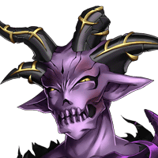

グレアム
クッ……。
グレアム
このままでは、 いかに魔神の私といえど、
セリア
フン、私のことをバカにしてたクセに たいしたことないわね！
セリア
倒れていった仲間たちの仇、 ここで取らせてもらうわ！！
グレアム
魔神というのは、あなた方人間に 追い詰められるほど弱くはないんですよ。
グレアム
しかし、相変わらずあなたは 愉快な反応をしますねえ。
グレアム
色々骨を折った甲斐が あったというものですよ。
セリア
ダメージが回復したというのなら、 もう一度与えてやるまでのことよ！
グレアム
私も、ちょっとだけは 消耗したんですから。
グレアム
あなたみたいなオモチャを、ここで 壊すのはもったいないですしね。
グレアム
それでは またの機会を楽しみにしてますよ。
セリア
…………。 腐っていても、しかたないわね。
セリア
取り逃がしたのは、 今回が初めてというわけじゃない。
セリア
この地域から、グレアムの脅威を 払拭できたのだから、
セリア
カルとShou-chanにも 報告しておかないと……。